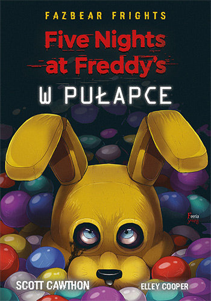
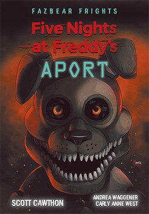
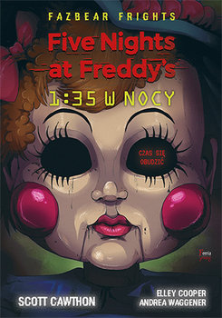
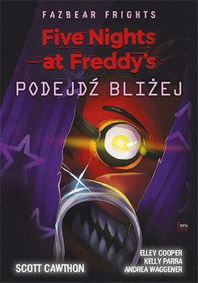
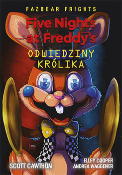

Książki FNaF
W Polskim Wydaniu
1.Five Nights at Freddy's: Fazbear Frights "W Pułapce"
>Five Nights at Freddy's: Fazbear Frights "W Pułapce"
Fani Five Nights At Freddy’s nie mogą przegapić tego hitowego wydania trzech opowiadań, które przyprawią o gęsią skórkę nawet najodważniejszego gracza!
Czy wiesz, czego pragniesz? To pytanie, na które Oswald, Sarah i Millie znają odpowiedź – a przynajmniej tak im się wydaje. Oswald chce, żeby lato nie było takie nudne, Sarah pragnie być piękna, a Millie marzy, by zniknąć z powierzchni ziemi. Ale w zakręconym świecie Five Nights At Freddy spełnienie najgłębszych pragnień ich serc ma swoją cenę…
W tym tomie mistrz horroru – Scott Cawthon – opowiada trzy mrożące krew w żyłach historie. Czytelnicy, strzeżcie się! Ta przerażająca kolekcja opowiadań powali nawet najodważniejszych fanów!

2.Five Nights at Freddy's: Fazbear Frights "APORT"
>Five Nights at Freddy's: Fazbear Frights "APORT"
Czytelnicy, strzeżcie się! Przed wami kolejne mrożące krew w żyłach opowieści, które nie pozwolą zasnąć nawet najodważniejszemu fanowi gry Five Nights at Freddy's...
Greg, Alec i Oscar zawsze byli popychadłami. Teraz są gotowi przejąć kontrolę nad swoim życiem. Greg decyduje się wcielić w życie kontrowersyjne tezy, które od jakiegoś czasu zgłębia. Alec w końcu chce pokazać światu, jak paskudnym i rozpuszczonym bachorem jest jego siostra. A Oscar, który zbyt wcześnie musiał dorosnąć, postanawia zrobić coś, o czym zawsze marzył…nawet jeśli miałoby to być złe. Chłopcy jednak szybko się przekonają, że w złowrogim świecie Five Nights at Freddy's sprawowanie kontroli nad sytuacją jest tylko iluzją...

3.Five Nights at Freddy's: Fazbear Frights "1:35 w nocy"
>Five Nights at Freddy's: Fazbear Frights "1:35 w nocy"
Kolejna porcja przerażających historii prosto z pokręconego świata gry Five Nights at Freddy’s. Zapnij pasy, bo ta złowroga przejażdżka może cię wybić na niebezpieczną orbitę…
Dla Delili, Stanleya i Devona bycie niezauważanym jest praktycznie sposobem na życie. Samotna od najmłodszych lat Delila co noc zapada się coraz głębiej w swoje sny, walcząc z makabrycznymi koszmarami, od których nie ma ucieczki. Stanley zmaga się z odrzuceniem i wpadł w pułapkę zastawioną przez tajemniczego pracodawcę. A Devon, porzucony przez ojca i ignorowany przez matkę, nie może zrozumieć, dlaczego miłość i przyjaźń przychodzą tak łatwo każdemu oprócz niego. Niestety, w bezdusznym świecie Five Nights at Freddy's samotność jest jak magnes, który przyciąga zło…

4.Five Nights at Freddy's: Fazbear Frights "Podejdź Bliżej"
>Five Nights at Freddy's: Fazbear Frights "Podejdź bliżej"
Oto kolejne trzy opowiadania eksplorujące mroczne zakątki uniwersum FNAF. Staw czoła morderczym zabawkom z pizzerii Freddy’ego wraz z bohaterami tych opowieści i poczuj, jak zamiera ci oddech!
Po rozwodzie rodziców, wskutek własnego głupiego żartu Pete trafia na zaplecze pizzerii i staje się ofiarą przerażającej klątwy… a potem nieświadomie wciąga w wir grozy swojego młodszego brata. Makabryczna baletnica, którą widać tylko przez przypadkowo skradzione niezwykłe okulary, coraz bardziej zagraża życiu Kasey. Susie i jej siostra Samantha desperacko próbują się porozumieć po śmierci jednej z nich, a złowrogi animatronik robi wszystko, by im w tym przeszkodzić...
Bohaterowie czwartego tomu opowiadań Five Nights at Freddy's przeżywają dramatyczne chwile. Ich życiem zawładnęła pustka. Kłębią się w nich uczucia, które przyciągają głodne potwory. Ponura siła czyha na ich bezsilność, by udowodnić im, że może być jeszcze gorzej…

5.Five Nights at Freddy's: Fazbear Frights "Odwiedziny królika"
>Five Nights at Freddy's: Fazbear Frights "Odwiedziny Królika"
Oto kolejny, jeszcze mroczniejszy tom opowiadań Fazbear Frights z uniwersum gry Five Nights at Freddy's. Nie możesz przegapić tych trzech opowieści, które udowodnią, że zawsze, ale to zawsze może być gorzej…
W otchłani ciemności kłębi się śmiertelna wściekłość. Bob tryska gniewem i ma dość swojej rodziny, postanawia więc wywinąć żonie i dzieciom okropny numer. Jego wakacyjny wyjazd okazuje się jednak najkoszmarniejszym pomysłem w życiu. Matt tłumi w sobie wielką złość wywołaną przez liczne nieudane związki, a o problemach zapomina, grając namiętnie w gry wideo. Nie ma pojęcia, co z tego wyniknie… A w Szpitalu Heraklesa, w pokoju 1280, jakaś mroczna siła utrzymuje przy życiu mężczyznę z makabrycznymi oparzeniami na całym ciele i żelazną wolą życia.
W piątym tomie opowiadań Fazbear Frights Scott Cawthon, twórca gry i świata Five Nights at Freddy's, przedstawia trzy historie, które zmrożą ci krew w żyłach, nawet jeśli uważasz się za nieustraszonego i masz nerwy ze stali!

To na razie koniec książek FNaF'a autora Cawthon Scott w języku Polskim. Zapraszam również do przeczytania angielskich wersji
Five Nights at Freddy's: Fazbear Frights E-booki w językach obcych
Nie tylko autora Cawthon Scott